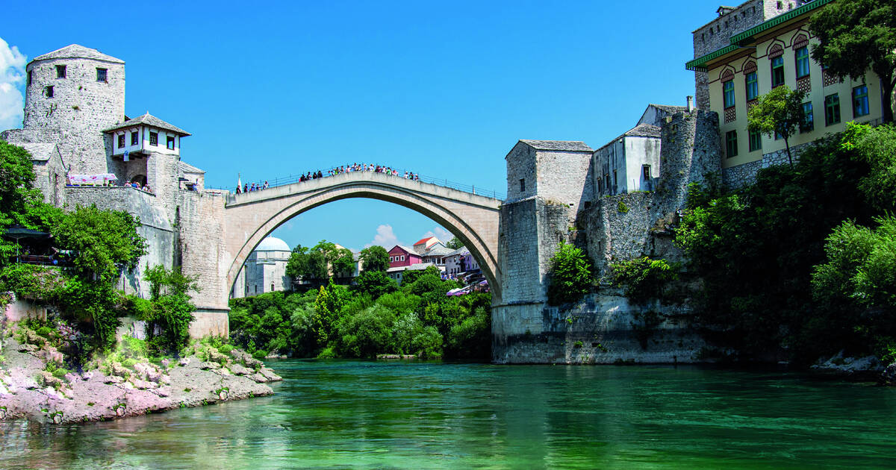
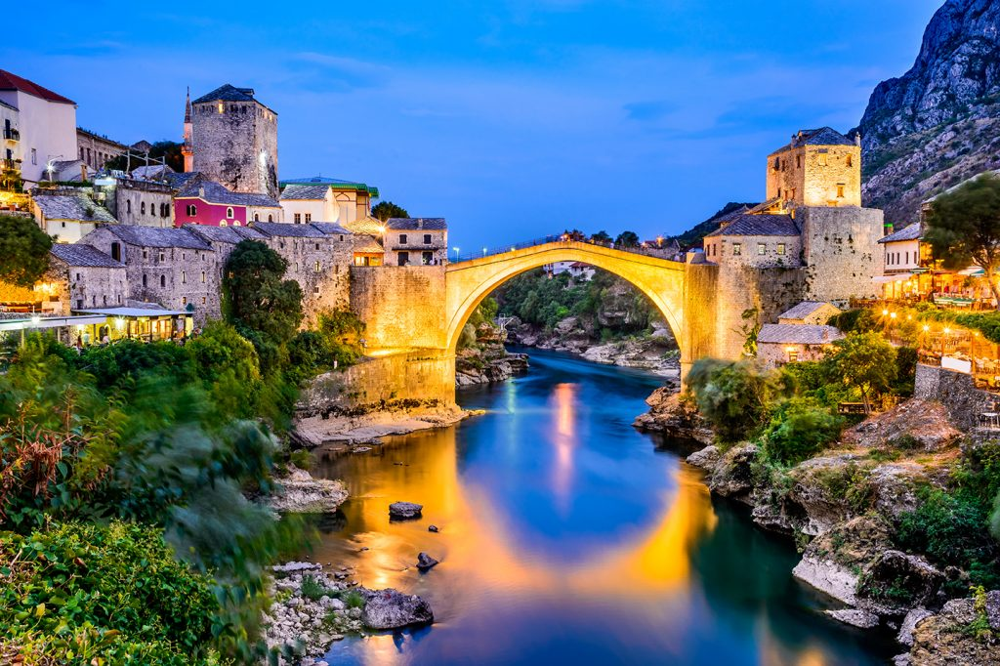
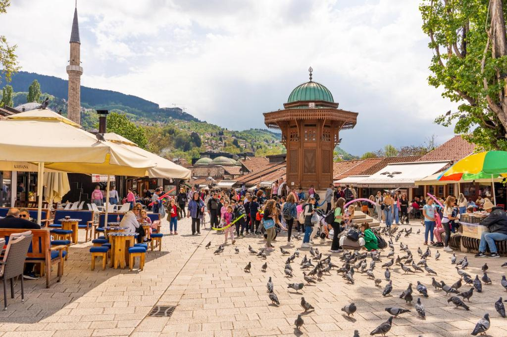
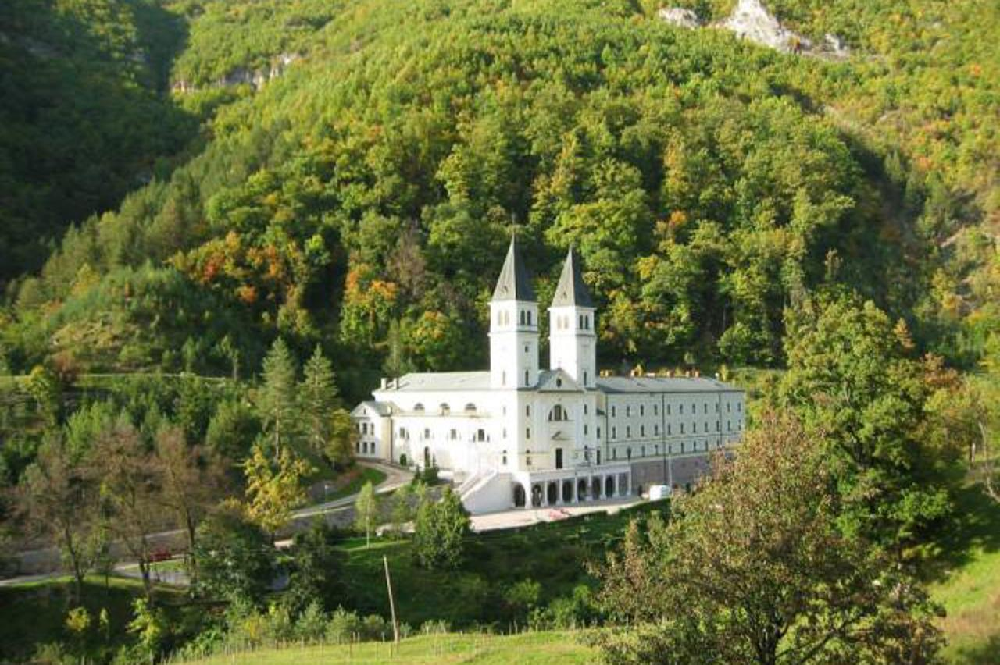
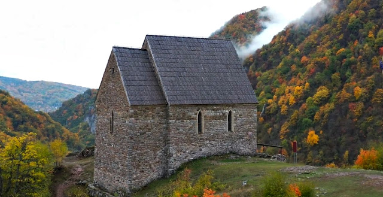
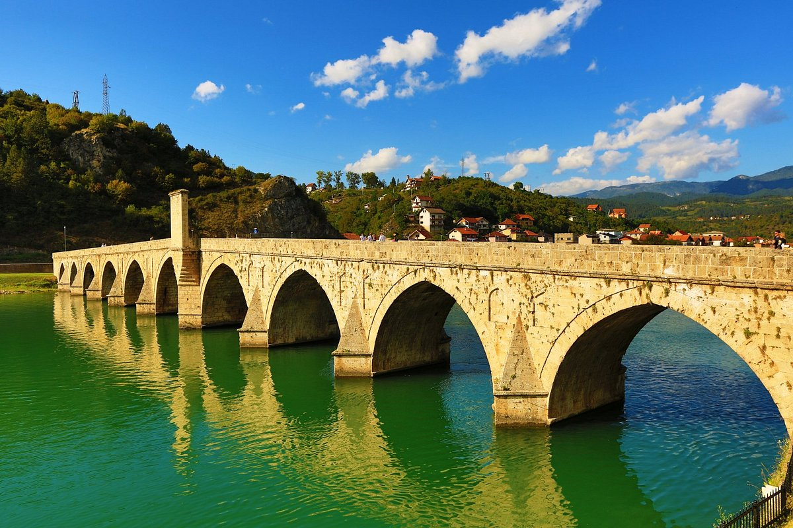
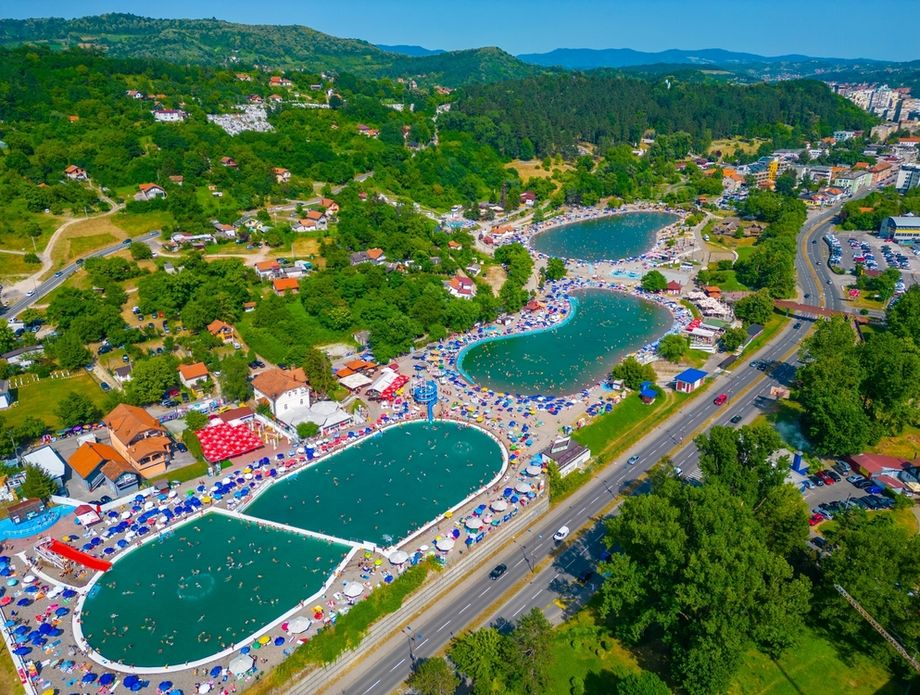
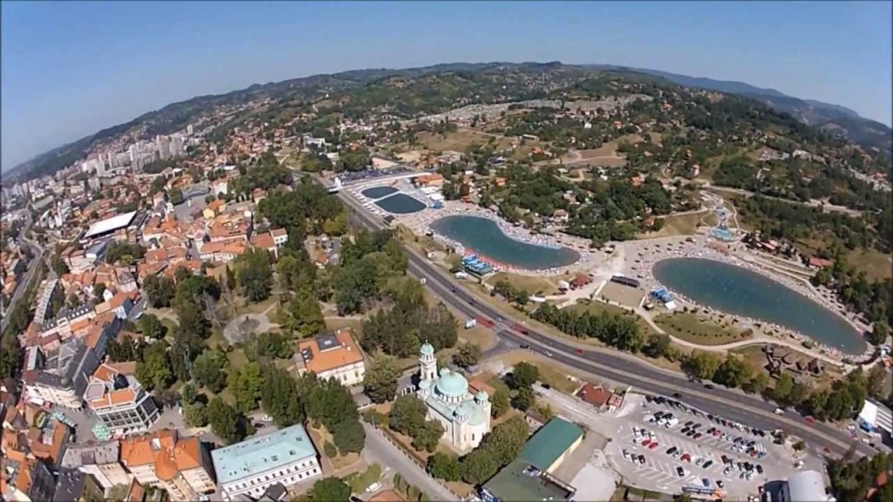
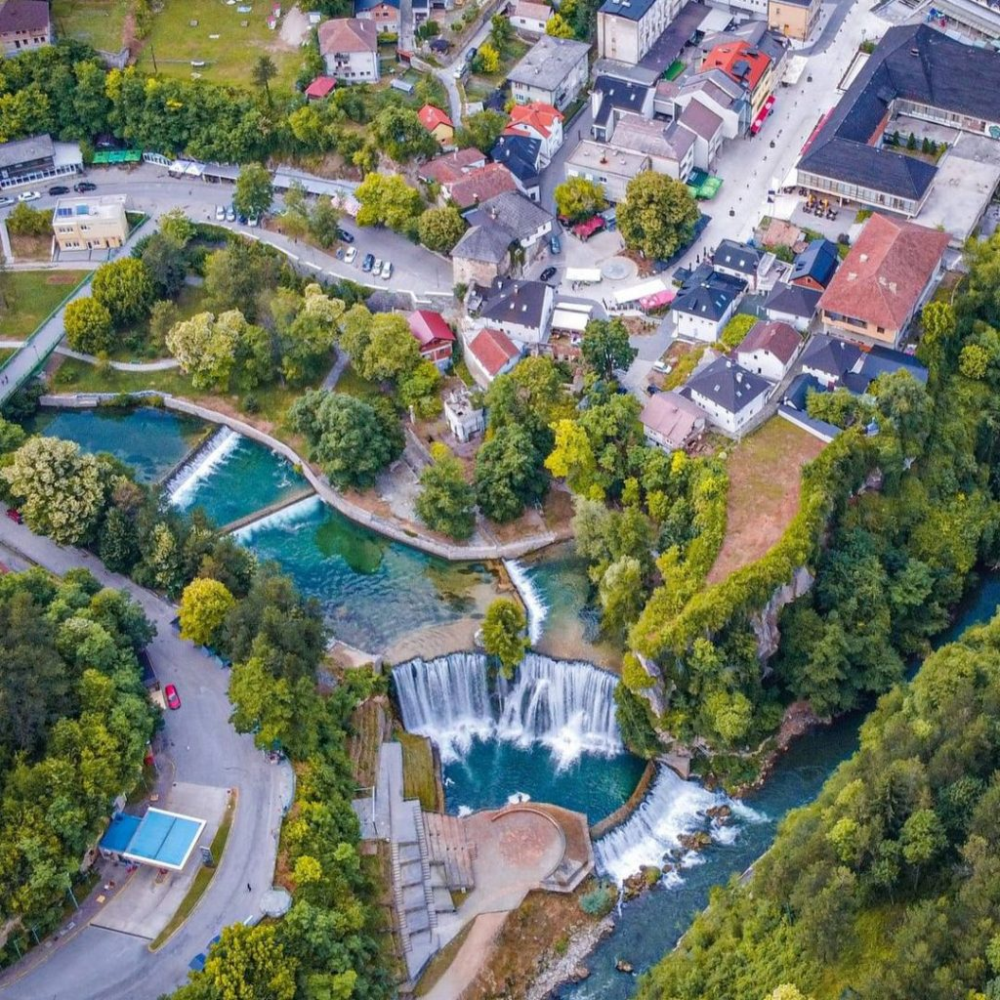

Stari Most (Old Bridge), Mostar


Arching gracefully over the turquoise waters of the Neretva River, Stari Most is a timeless symbol of Mostar’s history, resilience,
and beauty. Rebuilt with care after its destruction, the bridge connects not just the city’s two sides, but centuries of culture,
stories, and traditions. Locals and travelers alike gather to watch daring divers leap into the sparkling river below, while the
cobbled streets nearby echo with laughter, music, and life. A must-visit for any traveler, Stari Most is more than a bridge—it is
a poetic testament to unity, heritage, and the enduring spirit of Bosnia and Herzegovina.
Best time to visit: Early morning or late afternoon (for softer light and fewer crowds)
Opening hours: Open 24/7 (the bridge itself); nearby attractions and museums follow local hours
Entry: Free to access; museum visits and guided tours may require a small fee
SEE MAP
Baščaršija, Sarajevo


Nestled in the heart of Sarajevo, Baščaršija is a lively tapestry of history, culture, and vibrant life. Cobblestone streets wind past
centuries-old bazaars, aromatic cafés, and artisan workshops, where the scents of freshly baked burek mingle with the hum of daily
chatter. Minarets rise above tiled rooftops, blending East and West in a harmony that is uniquely Bosnian. A must-visit for travelers,
Baščaršija is more than a market—it is the soul of Sarajevo, where every corner tells a story, every alley invites discovery, and
every moment feels timeless.
Best time to visit: Early morning for a calm atmosphere or evening for lively cafés and street life
Opening hours: Open 24/7 (shops typically open from morning until evening)
Entry: Free to explore; food, souvenirs, and museums have individual prices
SEE MAP
Kraljeva Sutjeska (Bobovac i Sutjeska)


Hidden among lush hills and serene forests, Kraljeva Sutjeska is a journey through Bosnia’s medieval heart. The ancient fortress of
Bobovac whispers tales of kings and battles, while the Sutjeska Valley enchants with its untouched landscapes and timeless beauty.
Wandering these historic grounds, visitors feel the weight of history and the quiet majesty of nature intertwined. A must-visit for
travelers, Kraljeva Sutjeska is more than a site—it is a living story of heritage, resilience, and the enduring spirit of Bosnia
and Herzegovina.
Best time to visit: Spring and early autumn, when nature is green and temperatures are pleasant
Opening hours: Bobovac Fortress – Open daily, daylight hours; Franciscan Monastery in Kraljeva Sutjeska – usually open during
daytime (best to visit before late afternoon)
Entry: Bobovac – small entrance fee (approx. 2–3 €); Monastery – free or voluntary donation
SEE MAP
Mehmed Paša Sokolović Bridge, Višegrad


Spanning the gentle flow of the Drina River, the Mehmed Paša Sokolović Bridge is a masterpiece of Ottoman architecture and timeless
elegance. Each stone echoes centuries of history, stories of artisans, travelers, and empires that have passed beneath its arches.
As sunlight dances on the water, the bridge invites visitors to wander, reflect, and imagine the lives intertwined with its enduring
presence. A must-visit for any traveler, it is more than a bridge—it is a living monument to Bosnia and Herzegovina’s rich cultural
heritage and poetic past.
Best time to visit: Late spring to early autumn, especially May–September, when the Drina River is calm and the weather is ideal for walking and
photos
Opening hours: Open 24/7 (public bridge)
Entry: Free
SEE MAP
Pannonian Lake, Tuzla


Nestled in the heart of Tuzla, the Pannonian Lake offer a serene escape where sun-kissed waters meet vibrant promenades. Colorful
lakes shimmer under the sky, inviting visitors to stroll, relax, or dip into their warm, mineral-rich waters. Cafés and green spaces
along the shore hum with life, laughter, and the gentle rhythm of the city. A must-visit for travelers, Pannonian Lake is more than
a leisure spot—it is a lively oasis where nature, community, and the charm of Tuzla come together in perfect harmony.
Best time to visit: Summer months (June–August), especially during hot days when the lakes offer perfect refreshment
Opening hours: Daily, typically from morning until late evening (hours may vary by season)
Entry: Paid entry, affordable ticket prices depending on age and time of visit
SEE MAP
Waterfalls, Jajce


Cascading with a mesmerizing rhythm into the crystal-clear river below, the waterfalls of Jajce are nature’s poetry in motion.
Surrounded by lush greenery and historic charm, each drop tells a story of timeless beauty and serene power. Stroll along the paths,
feel the mist on your face, and listen to the gentle roar that has echoed through centuries. A must-visit for travelers, Jajce’s
waterfalls are more than a sight—they are an experience of wonder, tranquility, and the enchanting spirit of Bosnia and Herzegovina.
Best time to visit: Spring and summer for lush greenery and strong water flow; early morning for fewer crowds
Opening hours: Daily, open access to the falls; nearby museum or tower may have specific hours
Entry: Free to see the waterfalls; small fee for some nearby attractions
SEE MAP